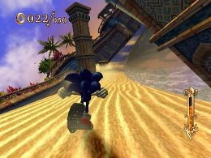
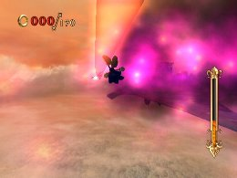
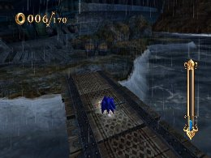
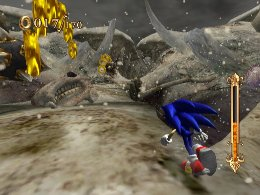
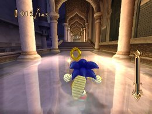

各ワールドの１ｓｔミッションを攻略
応用編
新しいワールドに入り、まず最初にプレイすることになるミッションは全てロングコースで、ワールド内で最も攻略性の高いミッションをなっています。
そこで、以下にその特徴と有効スキルについての説明を行っていきます。
◆「サンドオアシス」：シャフリヤール王宮へ急げ

・最初にプレイするステージということもあり、一通りチュートリアル（ロストプロローグ）で学んだことを活かせる遊び易い構成となっています。
・ステージにクセがない分、新規で入手したスキルの性能把握や、スキル編集の成果を実践する場として利用するなど、使い勝手の良いステージとなっています。
◆「ダイナソージャングル」：王様をくわえた翼竜を追え

・鬱蒼としたジャングルを舞台にしたステージということで、「道なき道を進む」ような構成になっており、ルート選択やギミックの回避のタイミングなどコツを掴むことが難しくなっています。
・巨大な雑草や樹木などで視界が遮られてしまうことが多く、気付いた時にはダメージやプレイミス（崖から落ちる）、「進行に必要なギミックを素通りしてしまう」ことが多くなっています。
・ステージの把握が難しい分、スピード系ではなく、リスクを軽減するサポート系のスキルを優先的に装備する方が良いでしょう。
【有効スキル】
「リングボーナス」「パワーリスタート」「リングセーバー」：ダメージを受けた時のフォローのため
「バックステップ」「ファイヤーステップ」：進行に必要なギミックなどを素通りしてしまった時のフォローのため
◆「イビルファウンドリー」：壊れた城を突き進め

・建物（城）の内部を舞台としたステージになっていることから全体的に道幅が狭く、その限られた行動範囲内でマジンの撃破やギミックの回避を行う必要があるため、より繊細な操作を要求されるテクニカルな構成になっています。
・ガスタンク（マジンに当てる）やファン、プレス機といった、状況によっては「その場で止まる」ことでタイミングを図らなければならない、クセのあるギミックが多くなっています。
・ステージ内の至る場所にグラインドレールが配置されており、それを活用することでスムーズに移動できますが、グラインドトリックを上手く決められないとギミックでダメージを受ける、ルートを外れ遠回りする羽目になるなど、注意が必要な場所があります。
また「クイックエア」系のスキルを装備していると、グラインドトリックを上手く決められなくなるため、装備から外しておくことが必要です。
【有効スキル】
「クイックグラインド」系スキル：グラインド移動する機会が多いため
「チャージジャンプ」：ジャンプではなくチャージ中の「静止状態」をギミックの手前で維持するため
「フルブレーキ」：ギミックの回避などで急停止する場所が多いため
◆「レビテイテッドルーイン」：シンドバッドを探し出せ

・高空を飛行するルフ鳥の背を舞台にしたステージとなっているため、眼下の雲を眺めつつ空中にできたコースを疾走する、開放感あるビジュアルになっていますが、正面から激しい「強風」が吹いてくる、背後から突然襲ってくる「ミサイル」など、一瞬も気の抜けない構成になっています。
・「強風」によってもと来た道へ大きく押し戻される、巨大な石柱が飛んでくる（当たるとダメージ）など、単なる演出としてだけでなく、実際のステージ攻略においても大きなウェイトを占めてくる「強風」への対処は非常に難しくなっています。
・「ミサイル」は、若干追尾してくることから、プレイヤーの移動ルートにより出現する位置が毎回変わるだけでなく、回避が楽な時とそうでない時との差も大きも大きいため、計算し難くなっています。
・「強風」「ミサイル」の回避には「スピードブレイク」「タイムブレイク」が有効になってきます。
どちらのギミックにも有効に働きますが、「強風にはスピードブレイク」「ミサイルにはタイムブレイク」がより効果的となっています。
理由としては、「強風」が吹く時には、周囲にアスレチック的なギミックや複数のマジンが配置されていることが多く、それらを一気に破壊して突き進める「スピードブレイク」が使い易いです。
「ミサイル」についても「スピードブレイク」で振り切ることは可能ですが、「スピードブレイク」は発動する時に若干「モーションに硬直」が入り、その硬直時に「ミサイル」に接触してしまう（追尾性能もあるため）ことがあるため、発動の瞬間に効果を発揮する「タイムブレイク」の方が適しています。
【有効スキル】
「スピードブレイク」「タイムブレイク」：「強風」「ミサイル」ギミックの回避に利用するため
「ジャンプキャンセル」＋「小ジャンプ」：「強風」時に素早く入力することで、体勢の立て直しが若干早くなるため
「ランディングダッシュ」「キャンセルダッシュ」系スキル：「強風」を受けた後、体勢の立て直しが楽になるため
「H・エキスパンズ」系スキル：「強風」を受け押し戻されても「ホーミングアタック」を行い易くなるため
「パールコレクター」系スキル：「スピードブレイク」「タイムブレイク」使用回数の確保のため
◆「パイレーツストーム」：嵐の海を越えろ

・荒れた海と海賊船を舞台にしたステージで、海上に浮かぶタルや木箱など小さな足場を利用して進んでいくことを中心とした、アクション性の非常に高い構成になっています。
・荒れた海を舞台にしていることもあり、海上に浮かぶタルは一定間隔をおいて出現と消滅（浮き沈み）する、ルートの殆どが地面ではなく「浮き橋」で不安定な動きを繰り返すため、これまで当たり前に行っていたアクションにも失敗し易く、緊張感があります。
・回転する鉄球や上下運動を繰り返すキラーローターなど、ルート進行を妨害するダメージギミック多く、回避のタイミングもこれまで以上にシビアなものになっています。
・ステージ全体を通じて不安定な足場が多く、これまで当たり前に行っていたアクションにも失敗し易い作りであることを踏まえると、スピード系ではなく、アクションをフォローするサポート系スキルを優先的に装備する方が良いと感じます。
【有効スキル】
「タイムブレイク」：小さい足場を確実に捉えるなど、繊細な操作が必要なため
「チャージジャンプ」：ジャンプではなくチャージ中の「静止状態」を足場やギミックの手前で維持するため
「H・エキスパンズ」系スキル「フルブレーキ」：アクションをフォローするため
「パールコレクター」系スキル：「タイムブレイク」使用回数の確保のため
◆「スケルトンドーム」：ソロモン王を探せ

・登場するマジンの大半が「骸骨」ベースのデザインで表現され、さらにステージ内の至る所にホーミングアタックで破壊できる「骨」が配置され、「スケルトン」という名前が示す通りの構成になっています。
・「骨」は単に演出的な意味合いで配置されているだけでなく、ルートを塞いだり、ショートカットとして利用できたりと、攻略要素として活かされています。
・マジンの配置されている数がこれまでのステージに比べ多く、「骨」と併せると、リモコンを振る（ホーミングアタック）機会が多くなっており、肉体的な疲労を感じ易くなっています。
・正規のルートとは別に、大幅なショートカットできる隠しルートが存在し、攻略の幅があるステージとなっています。
・マジンや「骨」の多さから、ホーミングアタックを行う頻度は高いことから、ホーミングアタックの使い勝手を向上させるスキルを中心に装備する必要があります。
また「スピードブレイク」を上手く合間に挟んでいくことで、かなり負担は軽減できるようになります。
【有効スキル】
「スピードブレイク」：マジンや「骨」オブジェクトをまとめて破壊できるため
「H・エキスパンズ」「ホーミングスタビリティ」系スキル：ホーミングアタックの使い勝手向上のため
「パールコレクター」系スキル：「スピードブレイク」使用回数の確保のため
◆「ナイトパレス」：宮殿の最深部へ突入しろ

・宮殿の内外を舞台にしたステージで、足場の崩れる外壁ルート、フライングカーペットによる空中移動ルート、転送や砂時計を利用したギミックなど、バラエティに富んだ構成になっています。
・新規アクションであるフライングカーペットは、操作が特殊で慣れるまで時間が掛かることに加え、突然目の前の道が崩れる、正面から高速の槍が飛んでくるなど、各種ギミックもこれまで以上にいやらしくなっており、全体的に高難易度になっています。
・「トーテムポール」のようにマジンを縦にずらりと並べ、見た目の威圧感を増す配置がされているなど、既存のものをアレンジして攻略性を高めています。
・突発的に発生するギミックや、スピードを緩めてタイミングを図る必要があるギミックスなど、ステージ全体を通じて、シビアなバランスで構成されていることから、スピード系ではなく、アクションをフォローするサポート系スキルを優先的に装備する方が良いと感じます。
また「スピードブレイク」「タイムブレイク」を上手く絡めていくことで、かなり余裕をもって攻略できるようになります。
【有効スキル】
「スピードブレイク」「タイムブレイク」：ギミックを一気に突っ切る・回避するため
「H・エキスパンズ」系スキル「フルブレーキ」：アクションをフォローするため
「パールコレクター」系スキル：「スピードブレイク」「タイムブレイク」使用回数の確保のため
 RSS
RSS